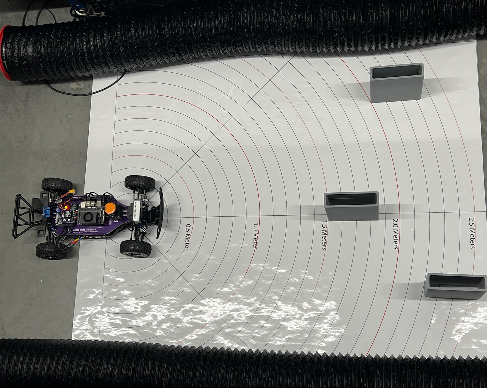
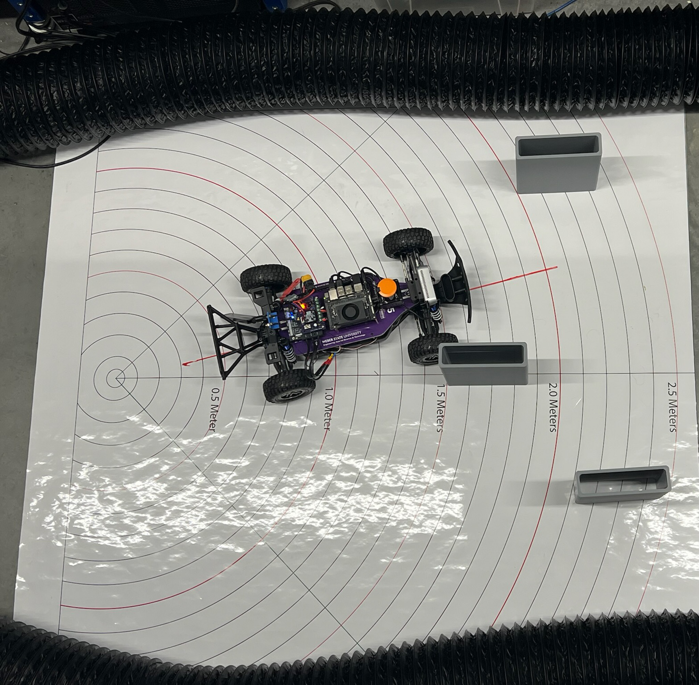
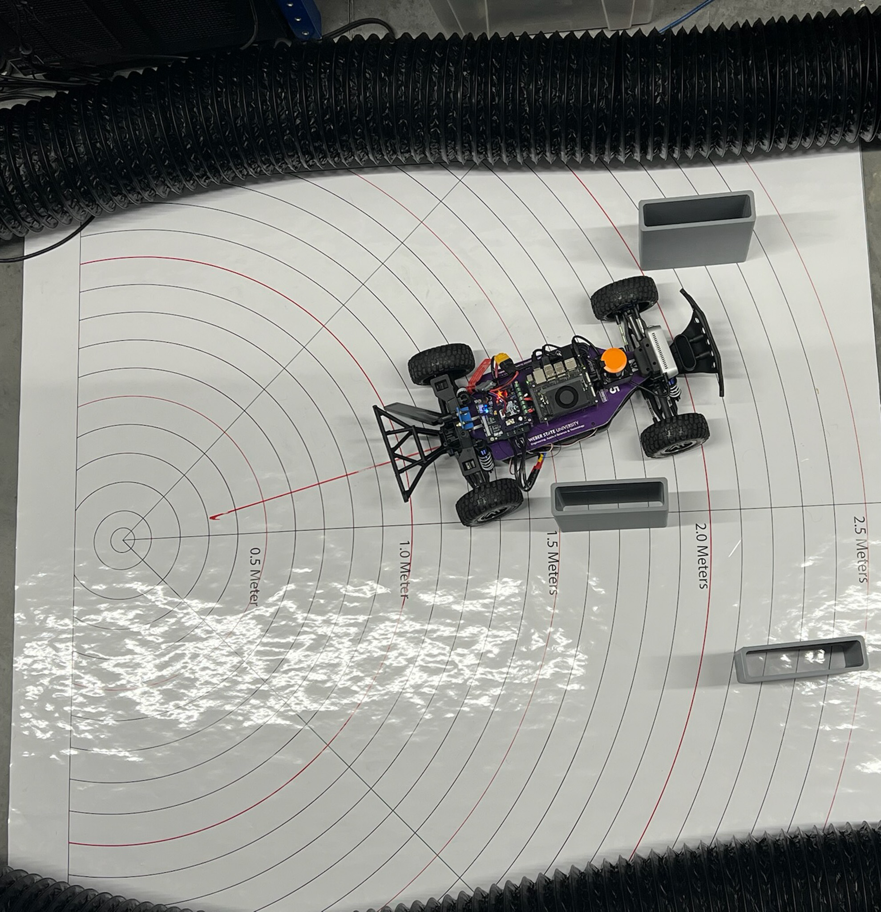

Follow the Gap Method¶
In the context of F1TENTH racing, the Follow the Gap method refers to an obstacle avoidance and path-planning algorithm designed to quickly identify the largest navigable opening (or “gap”) and steer the vehicle toward it.
Core Concept¶
Identify Obstacles: The vehicle uses LiDAR data to detect obstacles around it.
Finding Gaps: It analyzes the LiDAR scan points to identify free space (or gaps) that are large enough for the car to safely pass through.
Selecting the Largest Gap: Among the available gaps, the largest one is chosen to ensure safety and maximize maneuverability.
Choosing a Point within the Gap: Typically, the safest route is through the middle of the largest gap, so the vehicle aims for that midpoint.






Step-by-Step Process¶
1️⃣ Data Acquisition¶
Receive a full 360° LiDAR scan (
LaserScanmessage).For the Hokuyo LiDAR, flip the scan if necessary to match intuitive left-to-right ordering.
(Optional) Focus on a front window (e.g., ±90°), but default is to use the full scan.
2️⃣ Preprocessing¶
Clean the raw LiDAR ranges: - Replace NaN values with maximum range. - Replace infinite values with maximum range. - Clip distances to be within a realistic minimum/maximum range.
(Optional) Apply smoothing (e.g., moving average) to reduce small noise spikes.
3️⃣ Obstacle Masking (Safety Bubble)¶
Find the closest obstacle in the LiDAR scan.
Create a safety bubble around the closest obstacle: - Set all ranges inside the bubble radius to zero (obstacle). - This eliminates unsafe directions close to collisions.
4️⃣ Gap Detection¶
Treat non-zero regions in the processed ranges as free space.
Find the longest continuous sequence of non-zero points: - This is the largest navigable gap.
5️⃣ Best Point Selection Within the Gap¶
Two options:
Farthest Point Method: Select the furthest reachable point in the gap.
Disparity Method: Detect edges (sudden changes in distance) and steer between obstacles using disparities for smarter behavior.
Both methods output a best point index to steer toward.
Practical Considerations¶
Adjusting safety margins based on the speed and agility of the vehicle.
Fine-tuning the method to handle narrow paths or cluttered environments.
Accounting for dynamic obstacles by rapidly updating LiDAR scans and re-computing gaps.
Advantages¶
Simple, fast, and computationally efficient, making it suitable for real-time systems.
Effective in unknown and cluttered environments.
Limitations¶
May lead to oscillations or suboptimal paths in complex scenarios.
Doesn’t inherently incorporate global path planning.
UNC Follow the Gap - Demonstration